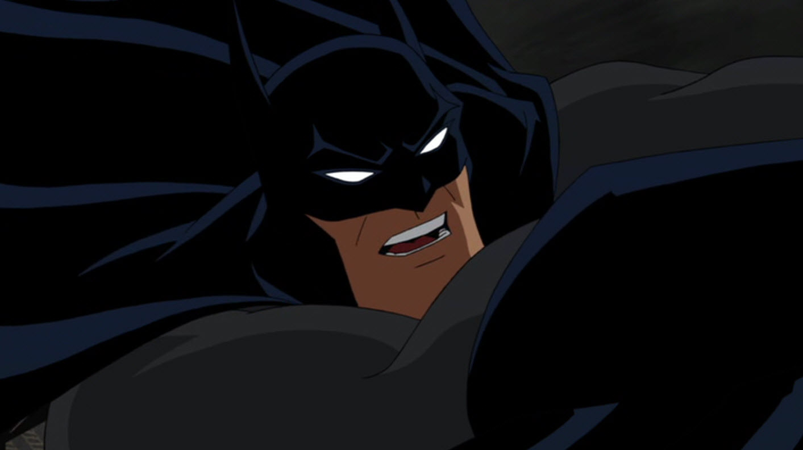
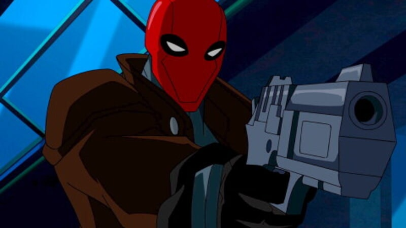
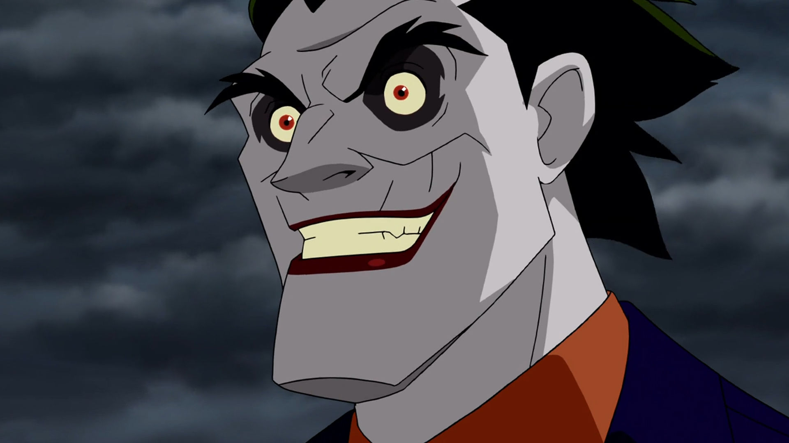
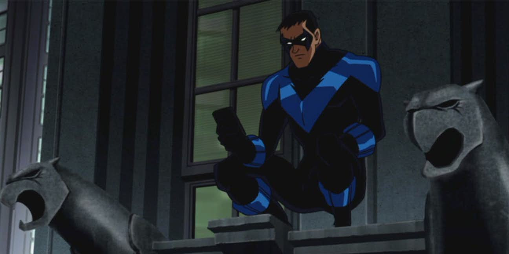

There is a mysterious vigilante in Gotham City by the name of the "Red Hood" who kills criminals in their own sense of justice, and goes face-to-face to Batman. Where past and buried memories of the Batman are brought to the light

Batman (Bruce Greenwood)
Bruce Greenwood Known for being an actor/voice actor and playing roles in Star Trek and Thirtheen Days
Batman came to be when Bruce Wayne's parents died in a crime alley by a criminal after watching a movie/show in a theather and going to that alley as a shortcut but it resulted in a tradegy and the birth of the Batman.

Red Hood (Jensen Ackles)
Jensen Ackles Known for being an actor/voice actor and playing roles in The Boys, Justice League: Crisis on Earth Part 1 and Two, etc.
Red Hood is a mysterious vigilante who will kill criminals unlike Batman and is mysterious and has a grudge against the Joker.

Joker (John DiMaggio)
John DiMaggio Known for being an actor/voice actor and playing roles in The Boys, Justice League: Crisis on Earth Part 1 and Two, etc.
Joker is one of the most well known and popular rogue's gallery of the Batman and is a criminal, a psychopath, and a lunatic. Many things can be said about him.

Dick Grayson (Neil Pattrick Haris)
Known for being shown in TV Series and Movies like playing the role of Carl Jenkins in the movie "Starship Troopers"
Dick Grayson after his parents died in a performance was in a way adopted by Bruce Wayne and was trained to become the first Robin.
Movie Recommendations
- Super Mario Bros. (April 2023)
- Teenage Mutant Ninja Turtles: Mutant Mayhem (August 2023).
- Puss in the Boots: The Last Wish. (December 2022)
- Spider-man: Across the Spider-Verse. (June 2023)
Submitted by: Shean Aquino